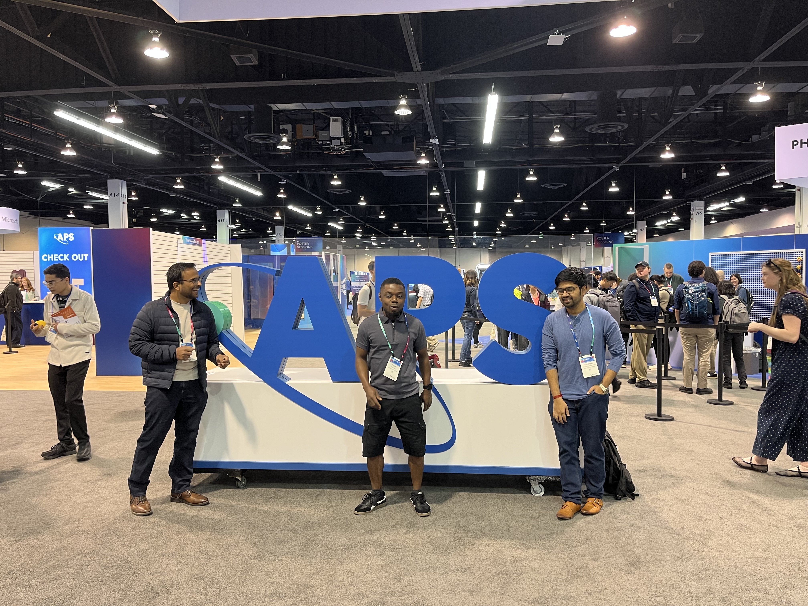

🎉 Jan 26: Check out Sri's new preprint on "Chemically decisive benchmarks on the path to quantum utility".
News
Latest and selective updates from the group.
🎈 Dec 2025: We welcome our new postdoc researcher, Dr. Mushir Thodika. Mushir has a lot of experience in quantum chemistry and material simulation. We have many plans to work together on quantum computing applications. Welcome Mushir!
🎉 Dec 2025: Check out our new pre-print on a new quantum Krylov algorithm (QKUD): arxiv.org/abs/2512.11788.
🎉 Dec 2025: Prince does it again! Congratulations Prince, for winning the Graduate Student Travel award from UND. He will attend the APS March meeting in Denver.
🎉 May 2025: Many congratulations to Prince for winning the Graduate Student Travel award from the Division of Research and Economic development at UND. He will attend the Mid-west theoretical chemistry conference at Wayne State University.
🎤 April 2025: Ayush is grateful to be hosted by University of Minnesota for a quantum information talk.
🎤 March 2025: The wavefunction of Asthana group collapsed at APS global meeting in Anaheim, CA.
🎉 March 2025: Check out Prince's new paper on the generalized eigenvalue problem in excited state methods for quantum computers: arxiv.org/abs/2503.09670. Congrats Prince.
🎉 Nov 2024: NSF Epscor Fellow grant awarded to Asthana group. NSF Epscor Fellow award will allow us to collaborate with Dr. Bo Peng at PNNL and develop quantum algorithms for early fault-tolerant quantum computers. NSF award.
🎈 Sept 2024: New undergraduate student joins the group (who will work in collaboration with Yen Lee Loh). Welcome Sean!
🎤 Sept 2024: Ayush delivered keynote talk in IEEE Quantum week workshop on "Chemical Applications of Quantum Computing".
🎉 Sept 2024: First NSF grant awarded to Asthana group. NSF ExpandQISE award in collaboration with Prof. Ed Barnes and Prof. Sophia Economou from Virginia Tech. NSF award.
🎈 Aug 2024: New graduate student joins the group. Welcome Olusayo!
🎈 July 2024: We welcome our new postdoc researcher, Dr. Srivathsan Sundar. We will work together on quantum computing applications in chemistry. Welcome Sri!
🎤 March 2024: Ayush gave invited talks in APS March Meeting, NREL Questaal Workshop, Concordia College.
🎉 Nov 2023: New funding from UND early career grant in collaboration with Dr. Ahmed Abdelhadi (SEECS) and Dr. Mark Hoffmann (Chem). UND Today.
🎉 Nov 2023: Amazon Braket graciously provided quantum and classical hardware resources to Asthana group for research.
🎓 2023: Ayush gave invited talks in IEEE Quantum Week, IIT Bombay, TIFR Mumbai, University of Hyderabad, UND Physics.
🎈 Aug 2023: New graduate student, Prince Kwao, joined the lab. Welcome Prince!